Irradiance Map Settings
This page provides information on the Irradiance map rollout.
Overview
This section allows you to control and fine-tune various aspects of the irradiance map. This rollout is enabled only when the irradiance map is chosen as the Primary engine on the Global Illumination rollout.
For more details on how the Irradiance Map engine calculates GI, please see the Irradiance Map page under Indirect Illumination.
You can also make use of the Irradiance Map Viewer, a standalone tool that allows you to navigate through the 3D version of a scene presenting the GI samples taken.
UI Path: ||Render Setup window|| > GI tab > Irradiance map rollout
(When Irradiance map is set as the primary GI engine)
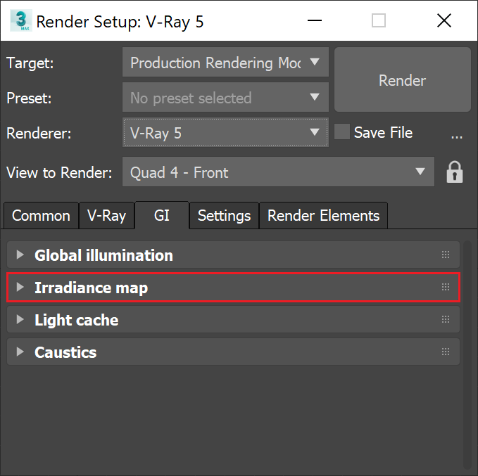
Default Parameters
The following parameters are visible from the Irradiance map rollout when set to the Default Render UI Mode.
Current preset – A list of several predefined settings for some of the irradiance map parameters. You can use these to quickly set the color, normal, and distance thresholds, as well as the min/max rates. The following presets are available:
Very low – Only useful for preview purposes to show the general lighting in the scene;
Low – A low-quality preset for preview purposes;
Medium – A medium quality preset; works fine in many situations in scenes which don't have small details;
Medium animation – A medium quality preset targeted at reducing flickering in animations; the Distance threshold is higher;
High – A high-quality preset that works in most situations, even for scenes with small details as well as for most animations;
High animation – A high-quality preset that can be used if the High preset produces flickering in animations; the Distance threshold is higher;
Very high – A very high quality preset; can be used for scenes with extremely small and intricate details.
Note that the presets are targeted for a typical 640x480 image. Larger images usually can do with lower Min/Max rates than those specified in the presets.
Min rate – Determines the resolution for the first GI pass. A value of 0 means the resolution is the same as the resolution of the final rendered image, which makes the irradiance map similar to the direct computation method. A value of -1 means the resolution is half that of the final image and so on. You would usually want to keep this negative, so that GI is quickly computed for large and flat regions in the image.
Max rate – Determines the resolution of the last GI pass. For more information, see The Max Rate and Control of Detail example below.
Subdivs – Controls the quality of individual GI samples. Smaller values make things faster, but may produce blotchy results. Higher values produce smoother images. This is similar to the Subdivs parameter for direct computation. Note that this is not the actual number of rays that is traced. The actual number of rays is proportional to the square of this value.
Interp. samples – The number of GI samples that is used to interpolate the indirect illumination at a given point. Larger values tend to blur the detail in GI, although the result is smoother. Smaller values produce results with more detail, but may produce blotchiness if low Subdivs are used. Note that if you use interpolated irradiance maps (i.e. the Mode is set to Animation (rendering)), V-Ray actually multiplies this value by the number of irradiance maps used. For example, if you have the Interp. samples set to 20, and the Interp. frames to 2, V-Ray actually uses 100 samples to interpolate. This is done in order to preserve the blurring of the GI solution compared to a single frame irradiance map, however it also slows down the rendering. To speed up the rendering in that case, you can decrease this value to 10 or 5.
Show calc. phase – When enabled, V-Ray shows the irradiance map passes as the irradiance map is calculated. This gives you a rough idea of the indirect illumination even before the final rendering is complete. Note that turning this on slows the calculations a little bit, especially for large images. This option is ignored when rendering to fields - in that case, the calculation phase is never displayed. You can use the drop-down menu on the right to chose how samples are displayed during the calculation phase.
Interp. frames – Determines the number of frames that are used to interpolate GI when the Mode is set to Animation (rendering). In this mode, V-Ray interpolates the irradiance from the maps of several adjacent frames to help smooth out any flickering. Note that the actual number of frames used is 2*(interp. frames)+1, meaning the default value of 2 means that in total 5 irradiance maps are interpolated. Higher values slow down the rendering and may produce "lagging" effect. Lower values render faster but may increase flickering. Note that increasing this value also increases the number of samples used for interpolation from the irradiance map - see the note for the Interp. samples parameter.
Mode – This group of controls allow you to select the way the irradiance map is (re)used.
Single frame – The default mode; a single irradiance map is computed for the whole image, and a new irradiance map is computed for each frame. This is the mode to use when rendering animations of moving objects. In doing so one must make sure that the irradiance map is of sufficiently high quality to avoid flickering.
Multiframe incremental – This mode is useful when rendering a sequence of frames (not necessarily consecutive) where only the camera moves around (so-called fly-through animations). V-Ray computes a new full-image irradiance map for the first rendered frame. For all other frames V-Ray tries to reuse and refine the irradiance map that has been computed so far.
From file – V-Ray loads the irradiance map from the supplied file at the start of the rendering sequence and uses this map for all the frames in the animation. No new irradiance map is computed. This mode can be used for fly-through animations and works well in network rendering mode.
Add to current map – V-Ray computes a completely new irradiance map and adds it to the map that is already in memory. This mode is useful when compiling an irradiance map to render multiple views of a static scene. Note that this mode is not supported for distributed rendering.
Incremental add to current map – V-Ray uses the irradiance map that is already in memory and only refines it in places that don't have enough detail. This mode is useful when compiling an irradiance map to render multiple views of a static scene or a fly-through animation.
Bucket mode – A separate irradiance map is used for each rendered region ("bucket"). Note that since each bucket is computed independently of the others, there may be differences at the bucket edges. They can be reduced by using higher settings for the irradiance map (the High preset, more hemispheric subdivs and/or smaller Noise threshold for the DMC sampler).
Animation (prepass) – V-Ray calculates irradiance maps to be used later on for final rendering with the Animation (rendering) mode. One irradiance map is created for each frame and written into a separate file. Note that in this mode you have to render one map for each frame (i.e. you cannot render every Nth frame). V-Ray automatically disables rendering of the final image in this mode - only irradiance map prepasses are calculated.
Animation (rendering) – V-Ray renders a final animation using irradiance maps created with the Animation (prepass) mode. Irradiance maps from several adjacent frames are loaded together and blended so as to reduce flickering. The number of irradiance maps that are interpolated is determined by the Interp. frames parameter.
Note: The irradiance map mode that should be used depends on the particular rendering task - a static scene, a static scene rendered from multiple views, a fly-through animation or an animation with moving objects. Refer to the tutorials section for more information.
Browse – Allows you to select the irradiance map file which is loaded if the From file mode is selected. Alternatively, you can enter the path and name of the file directly in the edit box. An irradiance map can also be loaded by dragging and dropping a .vrmap file directly in your viewport. Just be aware that doing so loads it for usage immediately, enabling GI, changing its Primary engine to Irradiance map and its Mode to From file.
Save to file – Saves the irradiance map currently in memory, to a file. Note that the Don't delete option in the On render end group must be turned on. Otherwise, V-Ray automatically deletes the irradiance map at the end of the rendering process.
Reset irradiance map – Clears the irradiance map from memory.
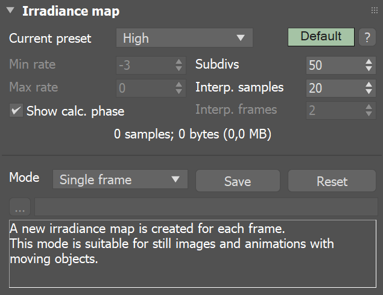
Example: The Max Rate and Control of Detail
The following examples show how the Max rate of the irradiance map determines the detail in the GI solution. The scene contains small details with sizes less than a pixel.
Note how a higher Max rate leads to a more accurate approximation with the irradiance map, but also to increased rendering times.
Note also that the differences between the irradiance map and the brute force solution appear only in areas with small details. Large flat areas are handled by the irradiance map very easily and accurately.
Choosing an appropriate Max rate depends on what details you have in your scene and on the desired quality. If the image contains relatively flat surfaces with little detail, you can use a lower Max rate. If the scene contains a lot of small sub-pixel details, you need a higher Max rate too. Above a certain point of detailness, the irradiance map becomes too slow and in that case, brute force GI might perform better.
Settings
Image
Exaggerated difference with the brute force GI solution
Fixed AA and brute force GI (correct GI solution)
N/A
DMC AA and Medium GI preset (Max rate is -1)
DMC AA and High GI preset (Max rate is 0)
DMC AA and modified High GI preset (Max rate is 1)
DMC AA and modified High GI preset (Max rate is 2)
Advanced Parameters
The following parameters are added to the list of visible settings available from the Irradiance map rollout when set to the Advanced Render UI Mode.
Use camera path – When enabled, V-Ray calculates the irradiance map samples for the entire camera path, instead of just the current view. This is useful in the following cases:
-
Calculating irradiance maps for short fly-through animations in one go. Instead of using the Incremental add to current map mode and rendering the animation every Nth frame, you can turn the Use camera path option on, and render just one single frame - this produces information for the entire camera path.
-
Using irradiance maps for animations with moving objects where the camera also moves - either in Single frame or Animation (prepass) mode. In this case, setting the Use camera path option on helps to further reduce any flickering, as the GI sample positions on static geometry does not change.
Show direct light – Only available when Show calc phase is on. It causes V-Ray to show direct lighting for primary diffuse bounces in addition to indirect lighting while the irradiance map is being calculated. Note that V-Ray does not really need to compute this. The option is only for convenience. This does not mean that direct lighting is not calculated at all; it is, but only for secondary diffuse bounces (only for GI purposes).
Color threshold (Clr thresh) – Controls how sensitive the irradiance map algorithm is to changes in indirect lighting. Larger values mean less sensitivity; smaller values make the irradiance map more sensitive to light changes (thus producing higher quality images).
Distance threshold (Dist thresh) – Controls how sensitive the irradiance map is to distance between surfaces. A value of 0.0 means the irradiance map does not depend on object proximity at all; higher values place more samples in places where objects are close to each other.
Normal threshold (Nrm thresh) – Controls how sensitive the irradiance map is to changes in surface normals and small surface details. Larger values mean less sensitivity; smaller values make the irradiance map more sensitive to surface curvature and small details.
Detail enhancement is a method for bringing additional detail to the irradiance map in the case where there are small details in the image. Due to its limited resolution, the irradiance map typically blurs the GI in these areas or produces splotchy and flickering results. The detail enhancement option is a way to calculate those smaller details with a high-precision brute-force sampling method. This is similar to how an ambient occlusion pass works, but is more precise as it takes into account bounced light.
Detail enhancement – Enables detail enhancement for the irradiance map. Note that an irradiance map calculated in this mode should not be used without the detail option. When detail enhancement is On, you can use lower irradiance map settings and higher Interpolation samples. This is because the irradiance map is only used to capture the general far-off lighting, while direct sampling is used for the closer detail areas.
Scale – Determines the units for the Radius parameter:
Screen – The radius is in image pixels.
World – The radius is in world units.
Radius – Determines the radius for the detail enhancement effect. Smaller radius means that smaller parts around the details in the image are sampled with higher precision - this would be faster but may be less precise. Larger radius means that more of the scene uses the higher precision sampling and may be slower, but more precise. This is similar to a radius parameter for an ambient occlusion pass.
Subdivs mult. – Determines the number of samples taken for the high-precision sampling as a percentage of the irradiance map Hemispheric subdivs. A value of 1.0 means that the same number of subdivs is used as for the regular irradiance map samples. Lower values make the detail-enhanced areas more noisy, but faster to render.
Randomize samples – Used during irradiance map calculation. When it is checked, the image samples are randomly jittered. Unchecking it produces samples that are aligned in a grid on the screen. In general, this option should be kept checked in order to avoid artifacts caused by regular sampling.
Check sample visibility – Used during rendering. It causes V-Ray to use only those samples from the irradiance map, which are directly visible from the interpolated point. This may be useful for preventing "light leaks" through thin walls with very different illumination on both sides. However it also slows the rendering, since V-Ray traces additional rays to determine sample visibility. For more information, see The Check Sample Visibility example below.
Multipass – When enabled, V-Ray makes several passes through the image with progressively finer resolutions, starting with the Min rate and working up towards the Max rate. This typically gives a better sample distribution in the irradiance map and also gives an early preview of the scene. When this is off, V-Ray makes just one pass with the specified Max rate, which is slightly faster, but may produce samples that are aligned in a straight line around the edges of the render regions.
Calc. samples – Used during irradiance map calculation. It represents the number of already computed samples that are used to guide the sampling algorithm. Good values are between 10 and 25. Low values may speed the calculation pass, but may not provide sufficient information. Higher values are slower and cause additional sampling. In general, this parameter should be left to the default value of 15.
Interpolation type – Used during rendering. It selects the method for interpolating the GI value from the samples in the irradiance map. For more information, see The Interpolation Methods example below.
Weighted average – Does a simple blend between the GI samples in the irradiance map based on the distance to the point of interpolation and the difference in the normals. While simple and fast, this method tends to produce a blochiness in the result.
Least squares fit – The default method; it tries to compute a GI value that best fits in among the samples from the irradiance map. Produces smoother results than the weighted average method, but is slower. Also, ringing artifacts may appear in places where both the contrast and density of the irradiance map samples change over a small area.
Delone triangulation – All other methods of interpolation are blurry methods - that is, they tend to blur the details in indirect illumination. Also, the blurry methods are prone to density bias (see below for a description). In difference, the Delone triangulation method is a non-blurry method and preserves the detail, while avoiding density bias. Since it is non-blurry, the result might look more noisy (blurring tends to hide noise). More samples are needed to get a sufficiently smooth result. This can be done either by increasing the hemispheric subdivs of the irradiance map samples, or by decreasing the Noise threshold value in the brute force sampler rollout. For more information, see The Delone Triagulation Method example below.
Least squares with Voronoi weights – A modification of the Least squares fit method aimed at avoiding the ringing at sharp boundaries by taking in consideration the density of the samples in the irradiance map. The method is quite slow and its effectiveness is currently somewhat questionable.
Although all interpolation types have their uses, it probably makes most sense to use either Least squares fit or Delone triangulation. Being a blurry method, Least squares fit hide noise and produce a smooth result. It is perfect for scenes with large smooth surfaces. Delone triangulation is a more exact method, which usually requires more hemispheric subdivs and high Max irradiance map rate (and therefore more rendering time), but produces accurate results without blurring. This is especially obvious in scenes where there are a lot of small details.
Sample lookup – Used during rendering. It selects the method of choosing suitable points from the irradiance map to be used as basis for the interpolation. For more information, see The Sample Look-up example below.
Nearest – Chooses those samples from the irradiance map which are closest to the point of interpolation. (How many points are chosen is determined by the value of the Interpolation samples parameter.) This is the fastest lookup method and was the only one available in early versions of V-Ray. A drawback of this method is that in places where the density of the samples in the irradiance map changes, it picks more samples from the area with higher density. When a blurry interpolation method is used, this leads to the so-called density bias which may lead to incorrect interpolation and artifacts in such places (mostly GI shadow boundaries).
Nearest quad-balanced –An extension of the nearest lookup method aimed at avoiding density bias. It divides the space about the interpolated point in four areas and tries to find an equal number of samples in all of them (hence the name quad-balanced). The method is a little slower than the simple Nearest lookup, but in general performs very well. A drawback is that sometimes, in its attempt to find samples, it may pick samples that are far away and not relevant to the interpolated point.
Precalculated overlapping – Introduced in an attempt to avoid the drawbacks of the two previous ones. It requires a preprocessing step of the samples in the irradiance map during which a radius of influence is computed for each sample. This radius is larger for samples in places of low density, and smaller for places of higher density. When interpolating the irradiance at a point, the method chooses every sample that contains that point within its radius of influence. An advantage of this method is that when used with a blurry interpolation method it produces a continuous (smooth) function. Even though the method requires a preprocessing step, it is often faster than the other two. These two properties make it ideal for high-quality results. A drawback of this method is that sometimes lonely samples that are far-away can influence the wrong part of the scene. Also, it tends to blur the GI solution more than the other methods.
Density-based – The default method; it combines the Nearest and the Precalculated overlapping methods and is very effective in reducing ringing artifacts and artifacts due to low sampling rates. This method also requires a preprocessing step in order to compute sample density, but it performs a nearest neighbor look-up to choose the most suitable samples while taking sample density in account.
Don't delete – Enables V-Ray to keep the irradiance map in memory until the next rendering. If unchecked, the irradiance map is deleted when the rendering is complete and can not be saved manually afterwards.
Auto save – Enables V-Ray to automatically save the irradiance map to the specified file at the end of the rendering. This mode is particularly useful if you want to send the irradiance map for rendering on a different machine though network rendering.
Switch to saved map – Enables V-Ray to automatically set the irradiance map mode to From file and the file name to be that of the map that was just saved. Only available when Auto save is enabled.
Browse button – Navigate to, and set path to the file used to save the irradiance map at the end of the rendering if Auto save is enabled.
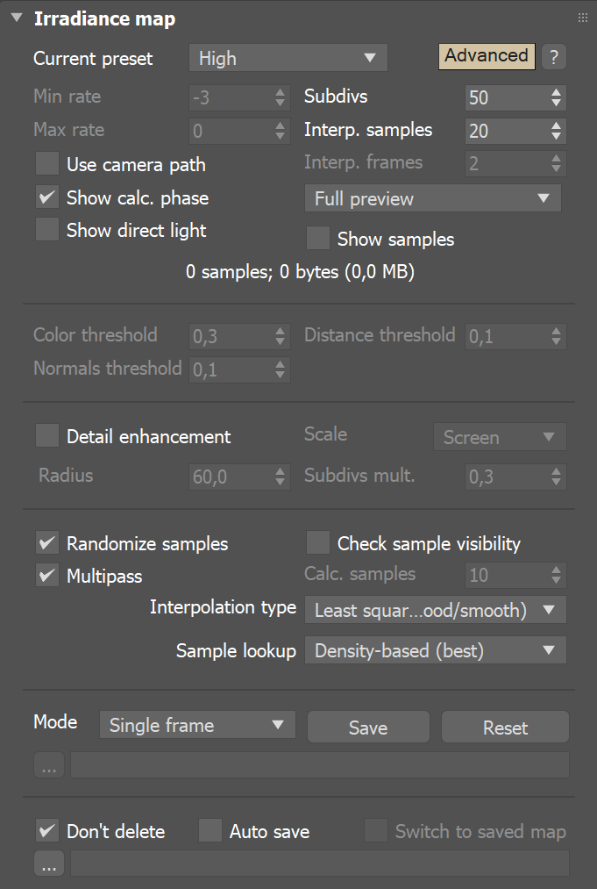
Example: Check Sample Visibility
The following examples demonstrate the effect of the Check sample visibility parameter. The scene is a thin wall lit on the two sides by two V-Ray area lights with different color. Both lights had the Store with irradiance map option checked. The two images are rendered with the Medium irradiance map preset.
offon
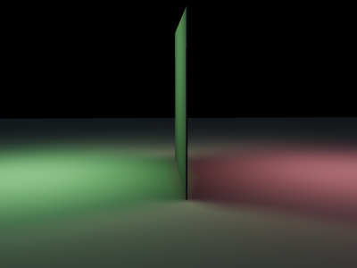
Notice the light leak in the first image. This happens because near the thin wall V-Ray uses samples from both the sides. When Check sample visibility is turned on, V-Ray discards the samples from the wrong side.
As a comparison, here is the same image rendered with the High irradiance map preset and Check sample visibility turned Off.
High irradiance map preset, Least squares fit
High irradiance map preset, Delone triangulation
The light leak effect is negligible in the left image and completely absent in the right one. This is because the High irradiance map preset causes V-Ray to take additional samples at the base of the thin wall, thus decreasing the leaking effect. Using a non-blurry interpolation method (Delone triangulation) further limits this effect.
The conclusion is that turning on Check sample visibility is only useful for low irradiance map settings. Also note that this option may not work very well for curved objects.
Example: The Delone Triangulation Method
This example shows the triangles used by the Delone triangulation method to interpolate samples in the irradiance map. Note that the triangles are constructed on the fly from the irradiance samples; no actual mesh is ever created. The vertices of the shown triangles correspond to samples in the irradiance map.
On-the-fly Delone Triangulation
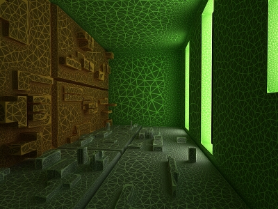
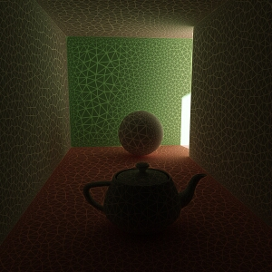
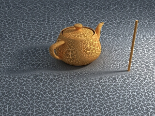
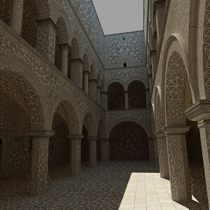
Interpolated result
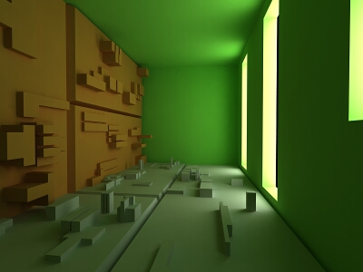
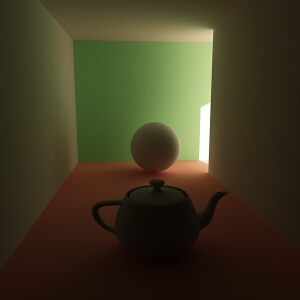
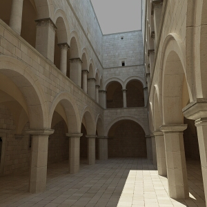
Example: Interpolation Methods
The following examples shows the main differences between a blurry interpolation method (Least squares fit) and a non-blurry one (Delone triangulation). Notice how the images in the first column are more blurry, while the images in the second column are sharper.
|
Comment |
Blurry method (Least squares fit) |
Non-blurry method (Delone triangulation) |
|
The scene is a simple cube on a sphere as seen from above, lit by a HDRI map. Low hemispheric subdivs and low irradiance map rates were used intentionally so that the difference is more obvious. Both images were rendered with exactly the same irradiance map. |
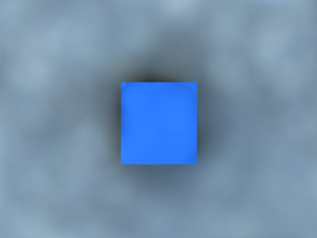 |
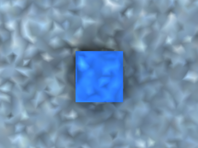 |
|
This scene shows the ability of the Delone triangulation method to preserve detail. Notice that the shadows in the right image are sharper. Both images used the same irradiance map. |
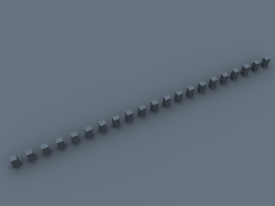 |
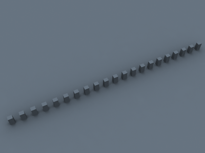 |
|
A close-up of the previous scene. The irradiance map is exactly the same as for the two previous images (it was saved and then loaded from disk). |
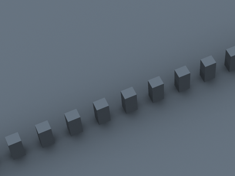 |
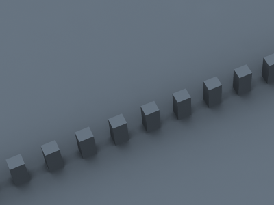 |
Example: Sample Look-up
The following examples show the differences between the three sample lookup methods and more specifically, their behavior in areas with changing sample density.
This is the test scene, the left image shows the final image and the right image shows the samples in the irradiance map (it was rendered with the Show samples option checked). The scene itself is a sphere on a plane, lit by a V-Ray area light and a little skylight. The area light had the option Store with irradiance map checked
Test scene
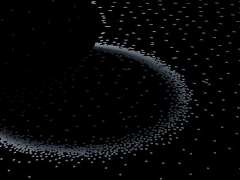
The samples in the irradiance map
As one will notice, the density of the samples is quite different in the uniformly lit areas and in the shadow transition area. The following three images used exactly the same irradiance map with the Least squares fit interpolation method.
Nearest lookup method
Nearest quad-balanced lookup method
Precalculated overlapped method
You can see the ringing artifacts (the white halo around the shadow) caused by the different sample density in the first two images. The last image, rendered with the Precalculated overlapping method is free from those artifacts. It also rendered faster than the other two images.
As a comparison, here is the same image rendered with the Delone triangulation interpolation method.
Nearest lookup method
Nearest quad-balanced lookup method
Precalculated overlapped method
The images are nearly identical. This is because the Delone triangulation method, being a non-blurry method, is less sensitive to the samples that are being looked up, so long as the delone trianglulation can be performed successfully from them.
Being the fastest of the three methods, Nearest lookup may be used for preview purposes. Nearest quad-balanced performs fairly well in the majority of cases. Precalculated overlapping is fast and in many cases performs very well, but may tend to blur the GI solution. The Density-based method produces very good results in the majority of cases and is the default method.
On Render End
This group of controls instructs V-Ray what to do with the irradiance map at the end of the rendering process.
Don't delete – The default is on, which means that V-Ray keeps the irradiance map in memory until the next rendering. If this option is cleared, V-Ray deletes the irradiance map when rendering is complete. This means that you are not be able to save the map manually afterwards.
Auto save – When enabled, V-Ray automatically saves the irradiance map to the specified file at the end of the rendering. This mode is particularly useful if you want to send the irradiance map for rendering on a different machine through network rendering.
Switch to saved map – Only available if the Auto save option is turned On. If Switch to saved map is on, then V-Ray also automatically sets the irradiance map mode to From file and sets the file name to be that of the map that was just saved.
Avoiding flickering in animations
The irradiance map is a biased GI solution and may introduce some unwanted flickering in animations. Below are some tips on how to avoid this effect.
-
For longer fly-through animations, precalculating the irradiance map and using the same map for all frames provides the fastest render times and is the best way to avoid flickering.
-
For shorter animations with moving cameras (with or without moving objects and lights), the Use camera path option helps to stabilize the irradiance map.
-
For animations with moving objects and lights, using animated irradiance maps and frame blending (with or without the Use camera path option) may help to reduce flickering.
Note that completely removing flickering artifacts arising from the irradiance map may be difficult or impossible. Using the Brute force GI engine as a primary GI engine may be the best and fastest option (with the secondary GI engine set to either Light cache or again Brute force).
Notes
-
You can view, merge and save irradiance maps with the Irradiance map viewer tool.
-
For animated irradiance maps, GI samples on different objects are not shared; this may lead to small objects appearing black in the final renders. To solve this issue, group those objects together - this will work as GI samples are shared for objects which are part of the same group.
-
You can speed up the Irradiance Map calculations by distributing them among several machines with the help of Distributed Rendering (DR).
-
For more details on how the Irradiance Map GI engine works, please see the Irradiance Map GI page under Indirect Illumination.
-
An alternative way of loading an irradiance map is by dragging and dropping a .vrmap file directly in your viewport. Just be aware that doing so will load it for usage immediately, enabling GI, changing its Primary engine to Irradiance map and its Mode to From file.